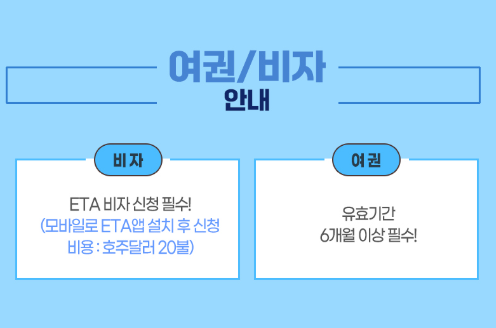

1. 시드니 패키지 4박6일 전체 일정 특징
이번 시드니 패키지 4박6일은 호주를 대표하는 도시 시드니의 핵심 관광지를 중심으로 일정이 구성된 상품입니다. 시드니는 오페라하우스와 하버브리지, 달링하버, 해안 풍경 등 도시 관광과 자연 풍경을 함께 즐길 수 있어 첫 호주 여행지로 많이 선택됩니다. 자유여행으로 방문할 경우 항공, 숙소, 시내 이동, 근교 관광을 각각 준비해야 하지만 패키지 상품은 이동 동선과 주요 관광 일정이 묶여 있어 비교적 편하게 여행할 수 있다는 장점이 있습니다. 다만 같은 4박6일이라도 출발시간과 귀국편 시간에 따라 실제 현지 체류시간이 크게 달라질 수 있으므로 항공 스케줄을 꼭 확인하는 것이 좋습니다.

2. 전 일정 4성급 호텔에서 확인할 부분
상품명에는 전 일정 4성급 호텔이 강조되어 있습니다. 장거리 여행일수록 숙소 컨디션이 전체 여행 만족도에 미치는 영향이 큰 편이기 때문에 호텔 등급뿐 아니라 실제 호텔명, 위치, 객실 형태, 조식 포함 여부를 함께 살펴보는 것이 좋습니다. 특히 시드니는 관광지가 넓게 분포되어 있어 숙소 위치에 따라 이동시간 차이가 발생할 수 있습니다. 패키지 특성상 호텔이 출발일별로 달라질 수도 있으므로 예약 전 예정 호텔과 대체 가능 호텔 정보를 확인해두는 것이 좋습니다.

3. 시드니 일주와 대표 관광 코스
시드니 일주 일정이라면 일반적으로 시드니 도심의 대표적인 랜드마크와 해안, 전망 포인트 등을 중심으로 구성되는 경우가 많습니다. 실제 포함 관광지는 상품 상세 일정표를 기준으로 확인해야 하지만, 하루에 방문하는 관광지 수와 각 장소에서 머무는 시간을 함께 보면 여행 강도를 예상하기 쉽습니다. 관광지가 많다고 무조건 좋은 것은 아니며 이동시간이 지나치게 길면 실제 자유시간이 줄어들 수 있습니다. 사진 촬영이나 개별 산책 시간을 중요하게 생각한다면 각 일정의 체류시간과 자유시간 유무를 체크해보세요.
4. 유류세 고정과 상품 가격 비교 방법
상품명에는 유류세 고정이라는 조건이 포함되어 있습니다. 해외패키지 상품을 비교할 때는 표시된 기본 가격뿐 아니라 유류할증료, 가이드 경비, 선택관광, 개인경비, 식사비, 각종 입장료 등이 최종 비용에 어떻게 반영되는지를 확인하는 것이 중요합니다. 유류세 고정이라는 표현이 있더라도 다른 추가비용이 발생할 수 있으므로 전체 포함·불포함 항목을 함께 살펴보는 것이 좋습니다.
5. 시드니 4박6일 예약 전 체크사항
예약 전에는 출발 확정 여부, 항공사, 위탁수하물과 기내수하물 규정, 호텔 위치, 식사 포함 횟수, 관광지 입장료, 가이드 경비, 쇼핑 일정, 선택관광 여부와 취소·환불 규정을 순서대로 확인해보세요. 호주는 비행시간이 긴 편이기 때문에 비행 스케줄과 현지 도착시간이 여행 피로도에도 영향을 줄 수 있습니다. 또한 계절이 한국과 반대이므로 여행 시기별 날씨와 옷차림도 함께 준비하는 것이 좋습니다.
시드니 패키지 4박6일 상품 확인하기
실제 출발일, 가격, 항공편, 호텔, 포함·불포함 조건과 취소 규정은 판매 페이지에서 최종 확인하세요.
여행 상품 자세히 보기 →시드니 패키지 4박6일 FAQ
시드니 패키지 4박6일 일정은 어떻게 되나요?
상품명 기준 일정으로 정리했으며 실제 세부 일정은 판매 페이지에서 확인하는 것이 가장 정확합니다.
호텔과 항공 조건은 어디서 확인하나요?
출발일에 따라 달라질 수 있으므로 예약 페이지의 최신 조건을 확인하세요.
추가 비용이 있을 수 있나요?
가이드 경비, 선택관광, 자유식, 관광세 등은 상품별로 다를 수 있어 포함·불포함 항목 확인이 필요합니다.
예약 전 무엇을 가장 먼저 봐야 하나요?
출발 확정 여부, 항공시간, 호텔, 실제 체류시간과 취소·환불 규정을 먼저 확인하는 것이 좋습니다.
페이지의 정보만 보고 예약해도 되나요?
이 페이지는 비교용 안내이며 실제 예약은 연결된 판매 페이지의 최신 정보를 기준으로 진행하세요.